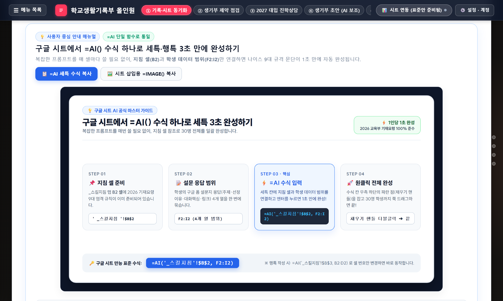
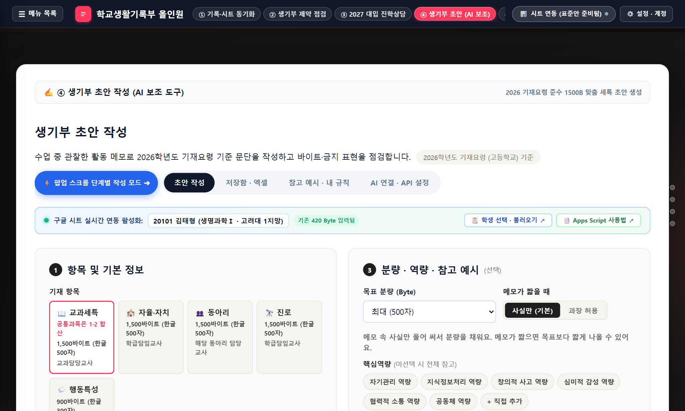
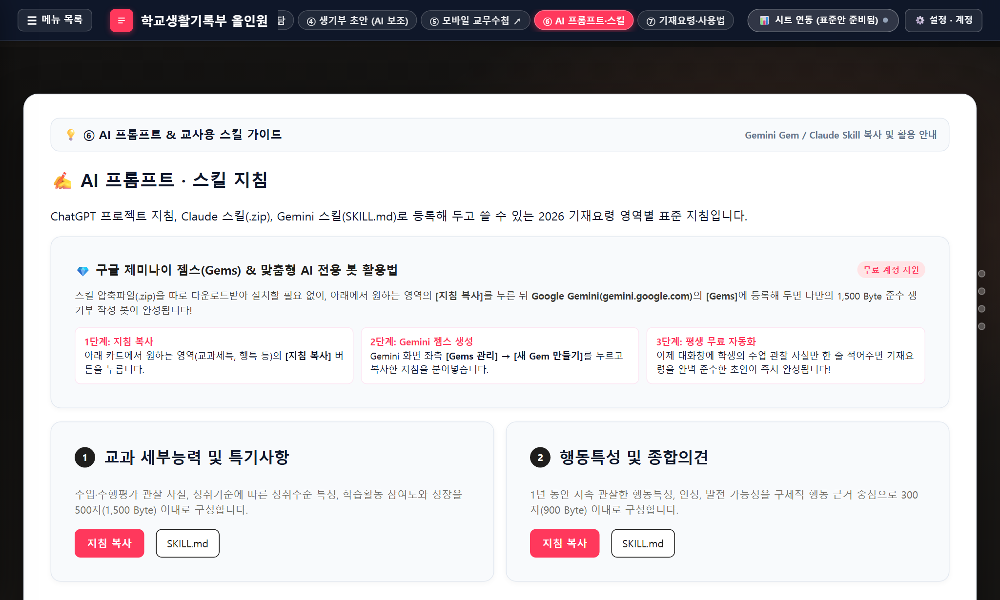

실제 화면 인터페이스 스크린샷 기반 교과·학급 담임 실무 가이드
사본 생성부터 =AI() 단일 수식 작성, OCR 판독, 4대 제약 검증, 2027 대입 상담까지 완벽 안내
학번(ID)을 기준으로 8개 탭의 진행 현황과 항목별 결손(미완성) 상태를 실시간 진단합니다.
학번(5자리) 하나로 모든 기록이 상호 연결되어 있어 중복 입력 없이 데이터 누락을 원천 차단합니다.
학급담임용과 교과담임용 2분할 사본을 제공하며, 흰색 셀에만 데이터를 입력합니다.

연회색(#F8FAFC) 또는 연하늘색(#EFF6FF) 배경 셀은 자동 계산 수식 및 연동 셀이므로 내용을 지우거나 임의 수정하지 마십시오.
프롬프트를 지침 탭 B2 셀에 보관하고 본문에서는 셀 주소만 참조하여 초안을 생성합니다.

4_AI세특_작성 탭 F~I열에 학생 구글 폼 설문 응답 데이터를 붙여넣습니다.수업 중 D2 셀에 남긴 한 줄 관찰 메모만으로도 나이스 1,500 Byte 3단 구조 초안 생성이 가능합니다.
교과세특, 행특, 자율, 동아리, 진로 및 6번 학생 보고서 OCR 판독 카드를 제공합니다.

_스킬지침 탭 해당 셀에 붙여넣어 우리 학교/과목 맞춤형으로 편집합니다.[SKILL.md] 버튼을 클릭하면 표준 마크다운 형식 파일로 즉시 다운로드되어 오프라인 보관이 가능합니다.
종이 보고서 사진을 일괄 판독하여 구글 시트 복사용 마크다운 표로 추출합니다.
학생들의 설문지 및 탐구보고서 사진에는 개인정보와 학습 기록이 담겨 있습니다. 본 작업 시 AI 모델 학습을 하지 않는다(No Model Training)고 계약된 구글 교육용 계정(@sch.hs.kr, @goedu.kr 등) 사용을 적극 권장합니다.
나이스 전송 전 전산 바이트 초과, 금지어, 불필요한 주어, 종결어미를 실시간 검증합니다.
133개 전국 주요 대학 전형 DB와 어디가 70% Cut 기준 실시간 지원 가능권을 분석합니다.
선택된 6개 지망 대학은 구글 시트 4_대입상담 탭으로 실시간 저장됩니다.
수업 중 스마트폰으로 학생별 관찰 메모를 작성하고 구글 시트로 즉시 클라우드 동기화합니다.
https://t-ong.vercel.app/ 스마트폰 브라우저 직접 접속 지원3_수업관찰_기록 탭으로 자동 누적됩니다.누적된 관찰 메모는 =AI() 함수의 두 번째 인수로 자동 연결되어 학생 개별 맞춤 세특 초안을 완성합니다.
관리자는 체크박스 원클릭으로 교사 계정에 이용권을 부여하고 만료일을 자동 관리합니다.
2_교사승인명단 A열 체크박스 클릭 즉시 승인일반 교사용 화면에는 관리자 시트가 노출되지 않으며, 전용 페이지(admin.html)에서 독립적으로 운영됩니다.
학기 초 3분이면 우리 교과 전용 AI 자동 작성 환경이 완벽하게 준비됩니다.
웹앱의 [관계형 시트] 패널에서 [교과담임용 시트 사본 만들기]를 클릭하여 본인의 구글 드라이브로 복사합니다.
Google AI Studio(aistudio.google.com)에서 무료 API 키를 발급받은 뒤, 시트 상단 메뉴 [생기부 올인원] > [Gemini API 키 설정]에 등록합니다.
_스킬지침 탭 B2 셀의 기재요령 프롬프트 문구를 확인하고 우리 과목(수학, 국어, 영어 등)에 맞게 조정합니다.
순백색 셀(F~I열)에 학생 설문 결과를 붙여넣고 E2 셀에 =AI('_스킬지침'!$B$2, F2:I2)를 실행합니다.
시트 메뉴에서 API 키를 처음 등록하거나 커스텀 함수를 실행할 때 구글의 보안 확인 창이 표시됩니다. 이는 매크로 정상 구동을 위한 표준 절차입니다:
※ 최초 1회만 허용하면 이후에는 추가 권한 요청 없이 영구적으로 동작합니다.
안전하고 원활한 생기부 작성을 위한 핵심 체크포인트
답변: 유출되지 않습니다. 본 시트는 선생님의 개인 구글 드라이브 계정 안에서만 동작하며, =AI() 함수 호출 시에도 학생 이름은 전달하지 않고 순수 학술 활동 내용(F2:I2)만 전송하므로 개인정보 보호 법령을 준수합니다.
답변: 분당 15회 호출까지 완전 무료(Free Tier)로 제공됩니다. 고등학교 1개 학급 30명 세특을 작성하기에 충분한 용량입니다.
답변: _스킬지침 탭의 B2 셀을 B3, B4 등에 복사하여 과목별 지침을 적어두고, =AI('_스킬지침'!$B$3, F2:I2)처럼 셀 주소만 변경하시면 됩니다.
답변: 즉시 Ctrl + Z (실행 취소)를 누르거나, 윗 행의 수식 셀을 아래로 끌어내려 복사하시면 복구됩니다.
답변: 생기부는 교사의 직접 관찰 기록이 법적 근거입니다. AI가 작성한 초안을 선생님께서 반드시 최종 검토(Review)하신 후 나이스에 등록하셔야 합니다.
시스템 문의: math-tong (고교 교사의 업무 경감을 응원합니다)